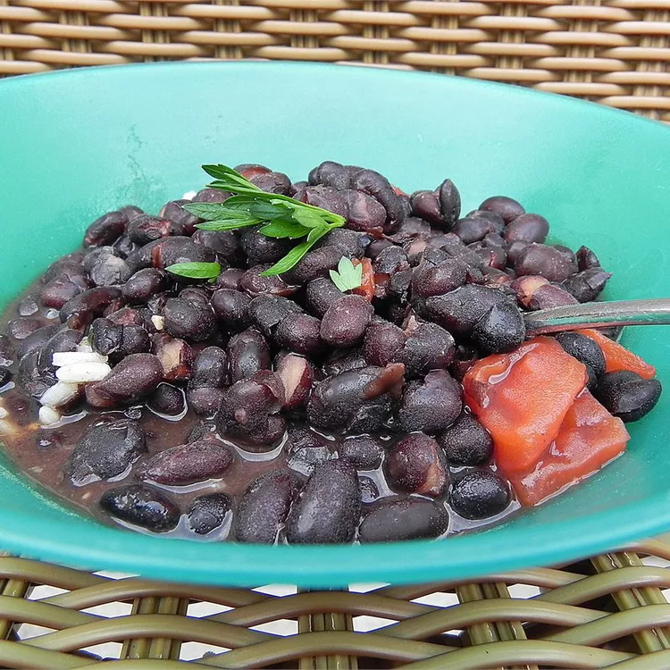

Delectable Cuban Black Beans
Description
Cuban black beans artfully prepared with a host of cuban spices just like any cuban grandma might prepare.
Ingredients
- 1 pound black beans, washed
- 1 onion, chopped
- 1 red bell pepper, chopped
- 1 green bell pepper, chopped
- 2 bay leaves
- 11/2 teaspoons paprika
- 11/2 teaspoons ground cumin
- 1 tablespoon dried oregano
- 2 minced hot green chile peppers
- 3 cloves garlic, minced
- 1/4 cup balsamic vinegar
- salt to taste
- ground black pepper to taste
Directions
- Cover dry beans with water and let stand covered overnight. Drain and discard water.
- Place the black beans in a large 6-quart saucepan. Add 9 cups water and 1 tablespoon olive oil -- this will prevent the beans from foaming. Bring the beans to a boil, reduce heat to low, cover, and cook until the beans are tender, about 1 hour.
- Meanwhile, chop onion and green pepper. Mash the garlic with salt and peppercorns in a mortar and pestle.
- Sauté the onions and green pepper in olive oil until the onions are translucent. Add mashed garlic and sauté another minute or so.
- Add the cooked beans, oregano, cumin, bay leaf, vinegar, and wine. Cover and simmer over low heat for 15 to 20 minutes, stirring occasionally. Remove bay leaf.
- Add additional salt and pepper to taste.
- Stir in the sugar; then drizzle a couple of tablespoons of olive oil over the beans. Immediately cover the pot, remove from heat, and let stand for 10 minutes. Serve the by now fantastically prepared black beans over white rice.
- You may garnish the beans with cilantro and chopped white onions.